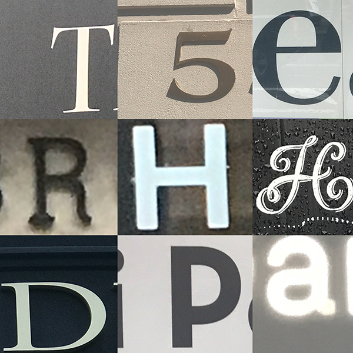
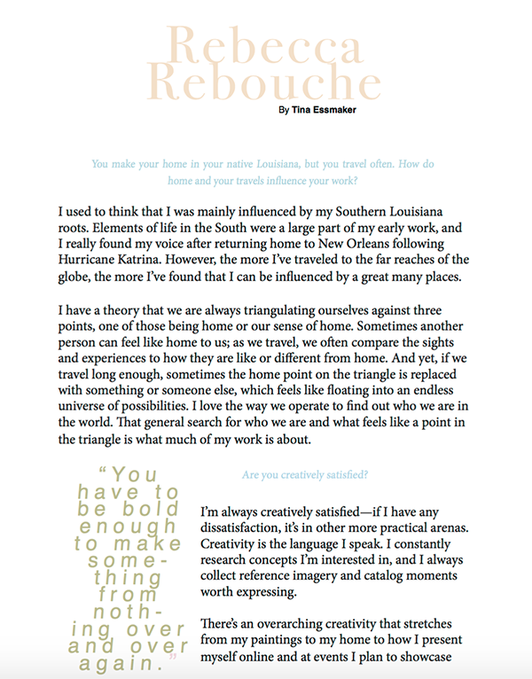
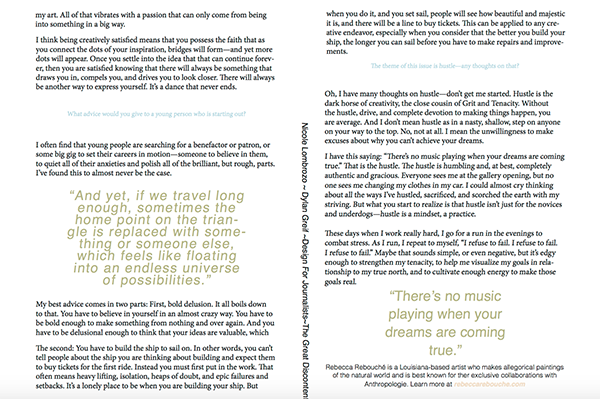
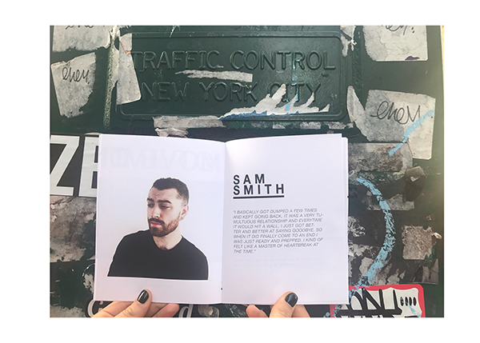
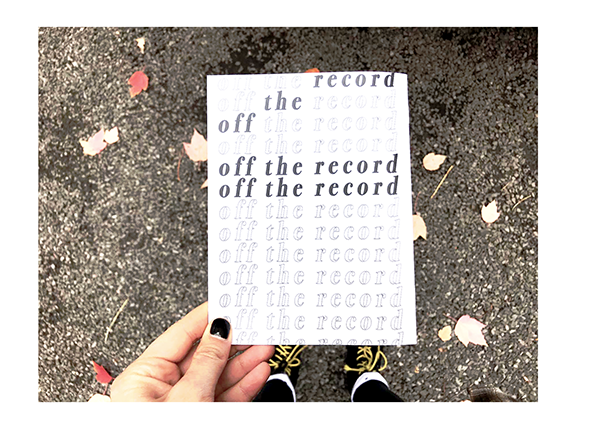

Design for Journalists I is an introductory course that covers everything from different font types to InDesign basics to how to print your own magazine from start to finish. This web page showcases all of the work that we did throughout the semester. By having all of our content in one place, we get to see how much we have grown since the start of the semester as well as what we would do differently now.
Hunt For Type
Assignment : We had to take pictures of logos pertaining to buildings in the city that exemplified one of the following types of classifications : humanist serif, rational serif, slab serif, grotesque sans serif, geometric sans serif, and script. Once the photos were collected, we had to arrange them using the mobile app, Layout, by Instagram.

Here is my hunt for type grid.
Description : After looking over my pictures, I noticed that most of them contained the color blue, so I decided to narrow it down to those pictures. I tried to only include the character on each grid, so that the letters did not look crowded. As for the different lighting in each picture, I thought the variation of different levels of brightness gave it a "random" feel.
Paragraph Design For Web
Assignment: After finding an inspiring poem/song/quote, we had to lay out and design the quote as a web page.
"Sing About Me I'm Dying" web page
"Sing About Me I'm Dying" Web Page (continued)
Description : Kendrick Lamar’s “To Pimp a Butterfly” is an extremely complex and highly poetic album that has inspired me for a long time. For this reason, I chose to represent it as best as I could in a web design format. This song, in particular, is a paradox between violence that Lamar experienced in Compton and the ways in which writing music has helped remove him from that violence to be able to share these stories of brutality with the world. I tried to represent this with the color scheme : Military green= violence and light pink/white=hope/perseverance. The font that I chose is also suppose to have a military-like feel, and I also thought it was a good contrast with the script-like font used for the title.
Paragraph Design For Print
Assignment : After choosing an article that we found compelling from The Great Discontent, we had to completely redesign it as a print layout in InDesign.

Here is my Interview, created in InDesign.

Interview (continued)
Description : By searching up Rebbeca Rebouche and reading her interview, I got a sense of her particular style and aesthetic(All-american, soft, bohemian, neutral, pastel-y.) This guided me when designing the article. By just adding color to the questions and the pull- quotes, I think I achieved a soft, but effective aesthetic. I also contrasted the serif font with the sans serif font used for the pull-quotes.
Zine Project
Assignment : We had to design the very first issue of a Zine from scratch.

Off The Record (sample article)

Off The Record (Back Cover)
Description : Off The Record is a Zine that uncovers the emotional process that goes into writing a love song. More specifically, the experiences that an artist goes through and then packages up into a song to hand to their audience. The zine does not include singers who are not also songwriters, because the main focus is on the singers’ own experience and what they want their fans to learn from those experiences. Off The Record was created especially for the music nerds, the lovers, the dreamers, and pretty much anyone who feels compelled to grab a copy. They will be distributed in Union Sq, The Highline, or The New School lobby. There will be four issues released per year.
Stylistically, the zine features multiple artists and then either a long quote by them set in a article-style format, or a short quote that describes the inspiration for one of their songs that they are most famous for. The design of the zine is simple, and modern, but there is some color in the photographs that injects a sort of nostalgic feel into the overall vibe of the zine. This was achieved by keeping some photos that were not great quality. The cover and the back matter definitely demonstrate this old-timey quality as well. For the Sam Smith and Kendrick Lamar interviews, there is a second page in a article style format, as there was more content (also, doing just quotes seemed a little repetitive, so this was a nice break from that format).
For this issue, the quotes used were either found on Youtube or in magazines, but in the future, the quotes would idealistically be gathered from local singer/songwriters. (An idea I had would be to travel to each
Skills Learned
The most important skill I learned throughout this semester is InDesign. I was only somewhat acquainted with photoshop for editing photos, but I had never used this tool, and I found it extremely helpful. Of course it is different from phtooshop in that it is for formatting once you have already typed and edited pictures elswhere. But, I found it easier to type and move text around in InDesign than I do in photoshop. I feel confident that I could make another zine on my own, and I am excited to keep experimenting!